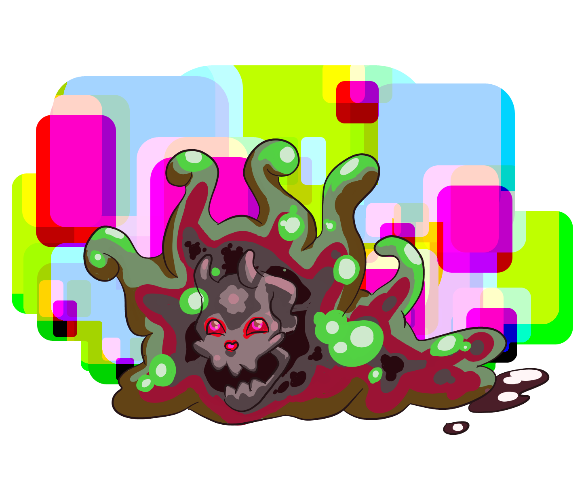

The Major Floob, a more formidable variant of its minor counterpart, dominates the deeper recesses of Terra Megalithia's swamps and marshlands. This larger, more aggressive slime creature has adapted to its environment with a greater degree of cunning and resilience. Its body, a dense mass of gelatinous matter, can engulf prey and obstacles alike, demonstrating an unsettling ability to reshape its form for attack or defense. Unlike the benign Minor Floob, the Major Floob is a guardian of the swamp's secrets, fiercely defending its territory from intruders.
Lv 2 Slime Creature, Experience Granted: 20, Size: Big, Speed: 15 Feet
Immune to sharp. Weak to fire. Amorphous.
HP 50, Energy 10, Defense 2
Standard Actions 2, Extra Actions 1
Toughness 16, Evasion 13, Wisdom 12
Tech 10, Persuasion 10, Sense 16, Inspect 10, Sneak 13